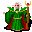

Games
Playable browser games and arcade experiments.
◆
Dungeon Crawl Bullet Hell (DCBH)

More Games
Explore the full collection in All Browser Games — including Brushwork, Mr. Domino, The Crown Below, Evil Empires, Moon Patrol, Green Wave, and Crawl of the Beholder.